01
Shape and line
Clarity, shapes and simplification, from observation to graphic form.
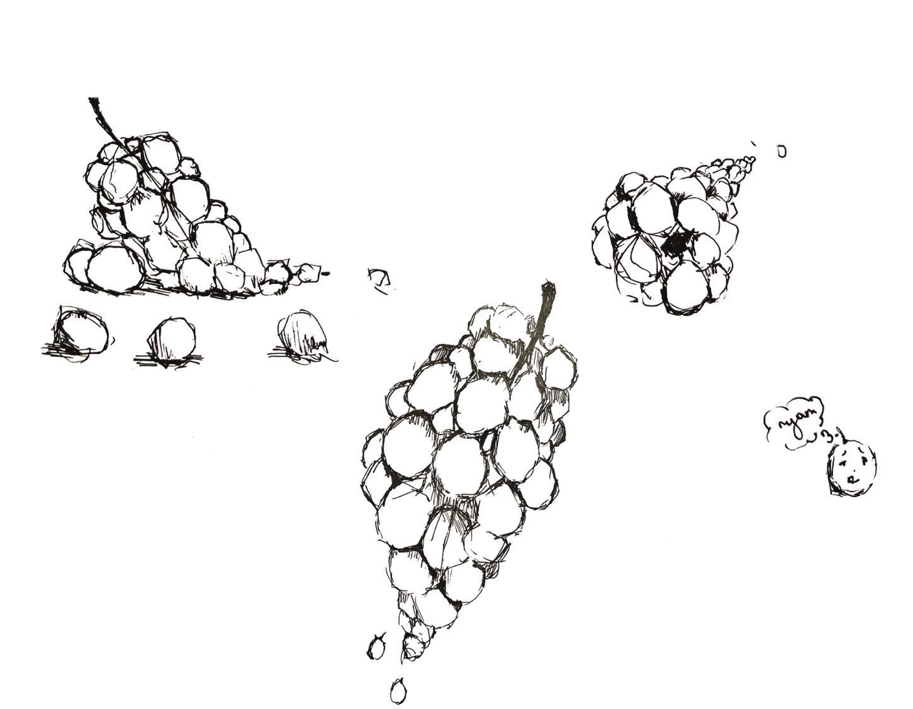
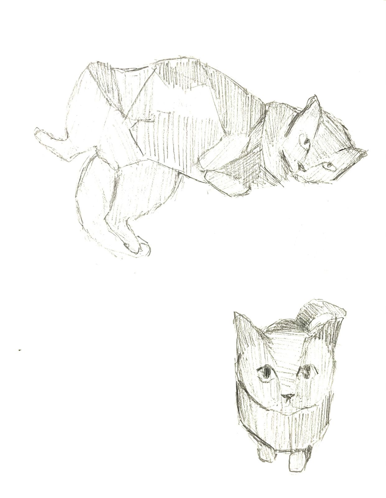
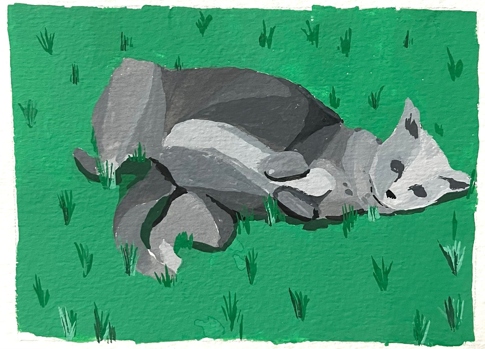
14
Digitalised sketchbook and postcards
Overview
A digitalised sketchbook of shape, line and colour studies, ending in a set of flat colour-block postcards of everyday places.
BriefCapture a personal slice of life rather than a generic tourist view, using only two or three colours per postcard.
ApproachReference study of block colour and simplified silhouettes, quick pencil drafts to find the strongest shapes, then flat colour to test value contrast and figure–ground.
5 steps
Clarity, shapes and simplification, from observation to graphic form.



Itten colour theory, tested in gouache landscapes.
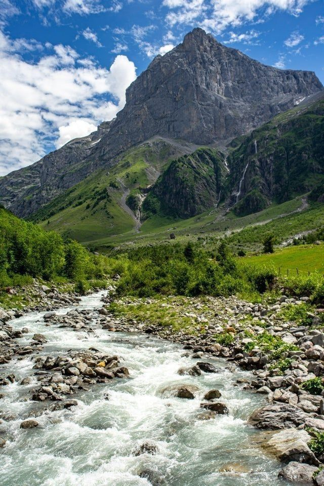
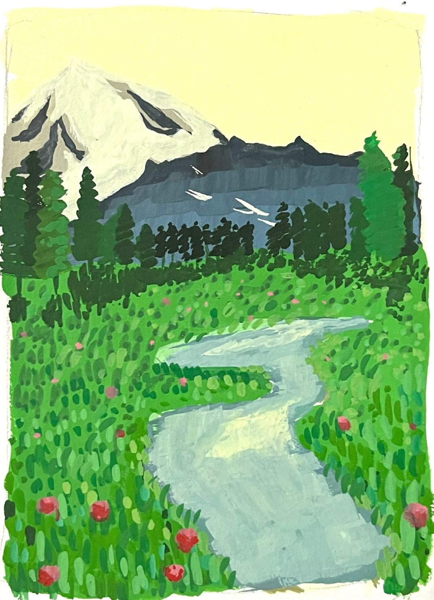
Familiar places: a bedroom, a breakfast table, campus architecture, a classroom. Block colour, simplified silhouettes and high-contrast light studied first.
Pencil sketches for contour, light direction and space, to find the strongest silhouettes.
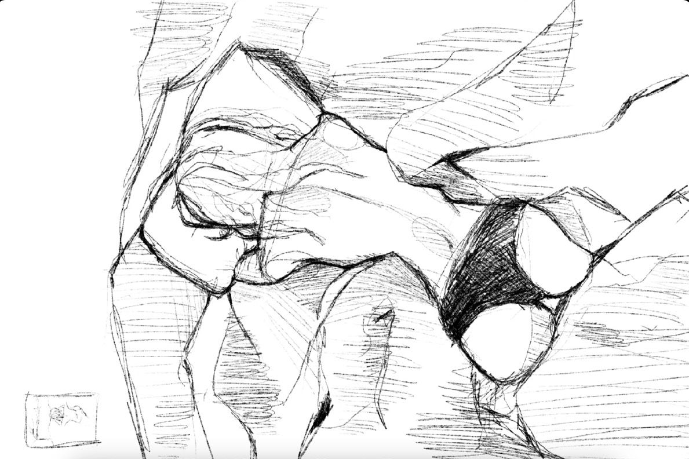
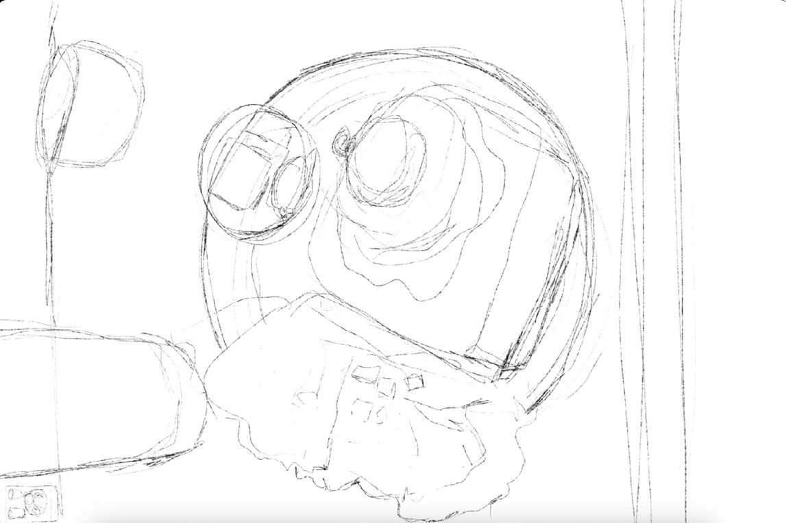
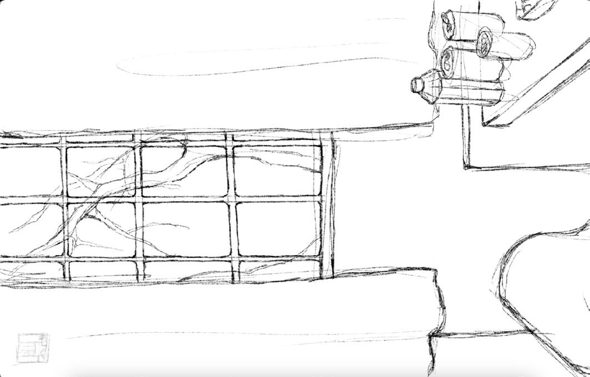
Two or three colours per piece; each palette shifts the mood.
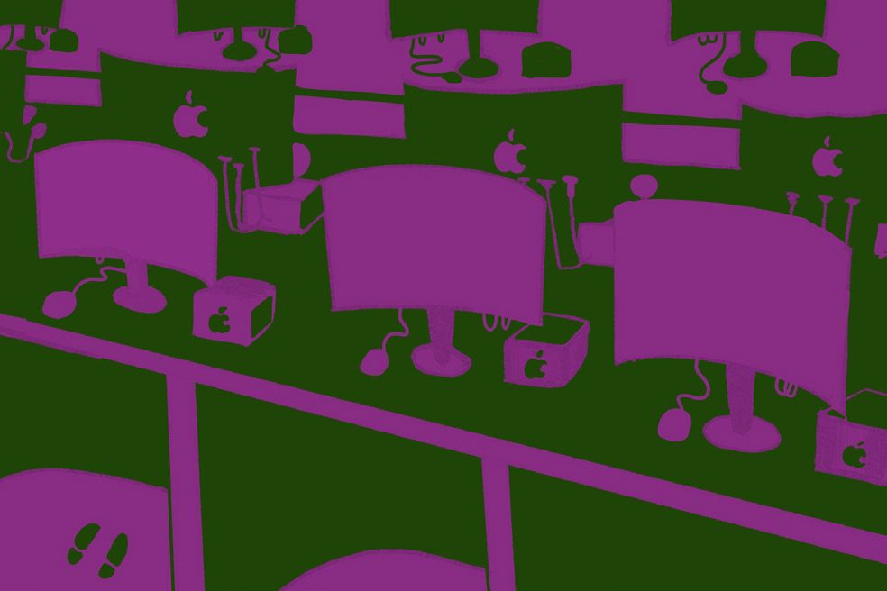
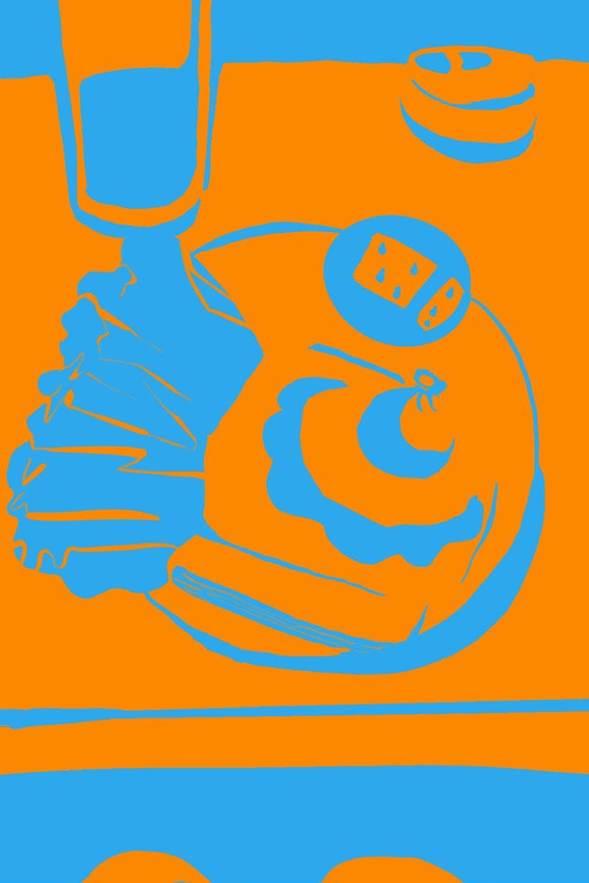
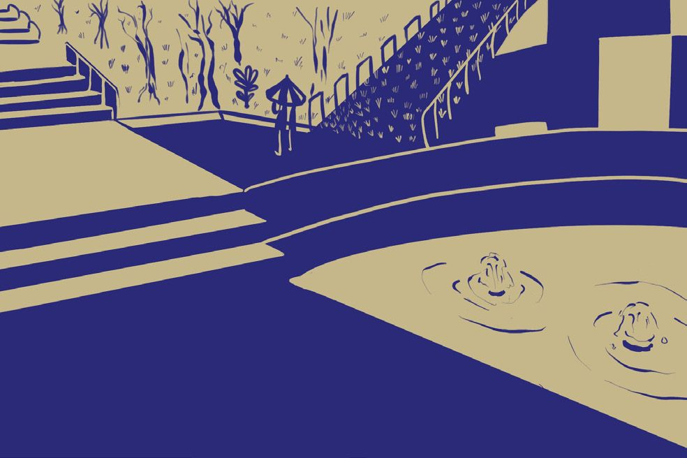
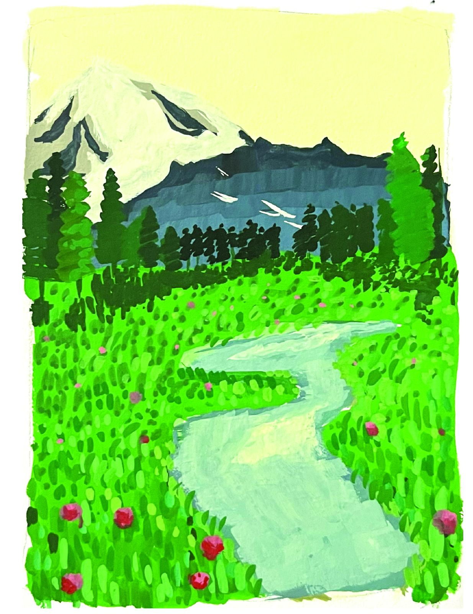
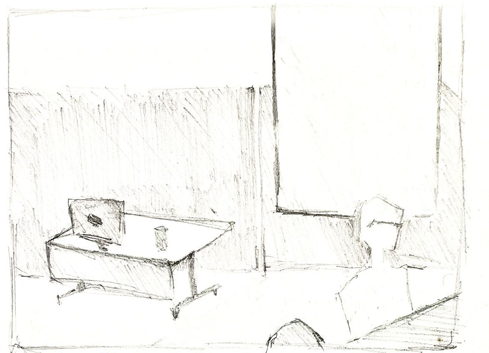